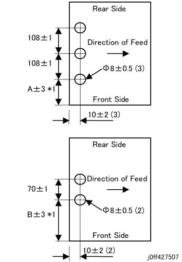
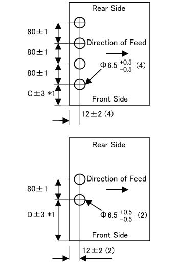

ADJ 27.29.2 打孔 侧面 Reg. 调整 
目的
To 调整 positions of 打孔 holes 沿着 ...的侧面 纸张.
请参阅 以下 用于 规格. (图 1) (图 2)
[2/3 Holes (US 2/3H)] (图 1)

(图 1) ff427507
[2/4 Holes (2/4H)]

(图 2) ff427515
The A, B, C, D in 图 1 和 图 2 是 如下:
纸张尺寸 | 3H | US 2H | 4H | 2H |
|---|---|---|---|---|
Dimension A (mm) | Dimension B (mm) | Dimension C (mm) | Dimension D (mm) FB/FBAP/WW | |
A4SEF | - | 70 | - | 65 |
8.5 x 11 SEF (Letter SEF), 8.5 x 14 SEF (Ledger SEF) | - | 72.95 | - | 67.95 |
A3 SEF, A4 LEF | 40.5 | 113.5 | 28.5 | 108.5 |
11 x 17 SEF, 8.5 x 11 LEF (Letter LEF) | 31.7 | 104.7 | 19.7 | 99.7 |
B4 SEF, B5 LEF | - | 93.5 | - | 88.5 |
16K (FBTW) LEF, 8K (FBTW) SEF | 25.5 | 98.5 | 13.5 | 93.5 |
16K (FBCN/FBHK) LEF, 8K (FBCN/FBHK) SEF | 27 | 100 | 15 | 95 |
* -: 打孔 unavailable

此 组合 is 禁止 当...时 it interferes positions of 打孔 holes 和 装订针 positions. 请参阅 [打孔] (堆叠器 纸盘, 顶部 纸盘) in [6.2.6.16 装订器 D6 其他 Finishing 处理] 用于 the 详细信息 on 打孔 和 装订针 禁止 items.
[检查]
Specify 纸张 该 needs 调整, specify the 编号 of 打孔 (2 Holes/3 Holes/4 Holes) 该 needs 调整, 和 make a 复印.
检查 hole positions. (请参阅 图 1 和 图 2)
调整
当...时 hole 位置 不对齐 occurs, 检查 hole 位置 using 图 1 和 图 2 和 change the NVM值 的 适用的 NVM 项目 by 以下步骤.
[Revoria 按下 E1136G, ApeosPro C810G, Apeos C8180G, Apeos 7580G, Revoria 按下 EC1100, Revoria 按下 SC180G]
输入 Diag 模式 和 选择 [维护 / Diagnostics] -> [NVM 读取 / 写入] ->
输入 the 链条连接 编号 -> [确认 / Change] -> 输入 the NVM值 ->
[OK] -> [关闭]. (请参阅 表 2 NVM 列表)
[Revoria 按下 PC1120]
输入 the PC Diag screen 和 选择 [NVM / EP 附件].
在...上 [NVM / EP 附件] screen, 选择 [DC131].
The NVM 读取 / 写入 screen 已显示.
选择 [Direct 代码 输入] 从 模块 field.
输入 the NVM 代码 进入 the 链条连接 field of Direct 代码 输入 box.
选择 [读取].
NVM 数据 已显示.
选择 目标的 NVM to 写入 从 the 表.
当前值 of 目标的 NVM to 写入 已显示 in the 新 值 field.
[写入] is possible 当...时 figures 是 being 已显示 in the 新 值 field.
输入 the 新 值 进入 the 新 值 field. (请参阅 表 2 NVM 列表)
选择 [写入] 的 新 值 box.
当...时 the 上方 限制 值 不是 informed 从 the 主机, 输入 值 is limited 到 相同 号码 of digits as 当前值.
当...时 the 写入 is OK (输入 值 being 在...之内 the valid 范围): NVM值 of 目标的 NVM 代码 的 主机 将 rewritten by the 新 值.
在...之后 rewriting of 指定的 NVM 代码 已完成, the completion message 将 已显示 和 the 值 in 当前值 field 将 replaced by the 值 从 the 新 值 field.
NVM 列表 打孔单元 类型
纸张 宽度 (mm)
纸张尺寸 Sample
NVM
默认值 (1 pulse)
范围 (1 pulse)
2/4H
203 < = 宽度 < = 225
A4 SEF/Letter SEF
763-058
158
81 ~ 305
2/4H
225 < 宽度 < = 297
B4 SEF/B5 LEF/Letter LEF/A3 SEF/A4 LEF
763-059
158
81 ~ 305
US 2/3H
203 < = 宽度 < = 297
A4 SEF/Letter SEF/B4 SEF/B5 LEF/Letter LEF/A3 SEF/A4 LEF
763-059
158
81 ~ 305
Using the NVM 默认值 of 158 as 参考, making the NVM 1 计数 smaller 从 158 移位 the hole 位置 0.058 mm towards the 后面, 当...时 making the NVM 1 计数 larger 移位 the hole 位置 0.058 mm towards the 前面.
Make a 复印 再次 和 检查 hole 位置 在...之后 changing the NVM值. 执行 调整 步骤 1 直到 the hole positions 是 acceptable.